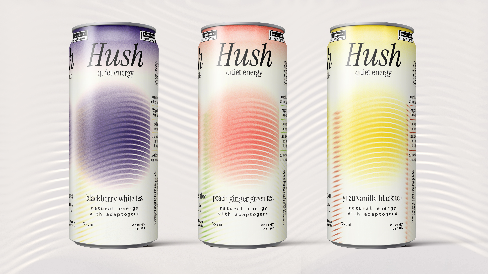
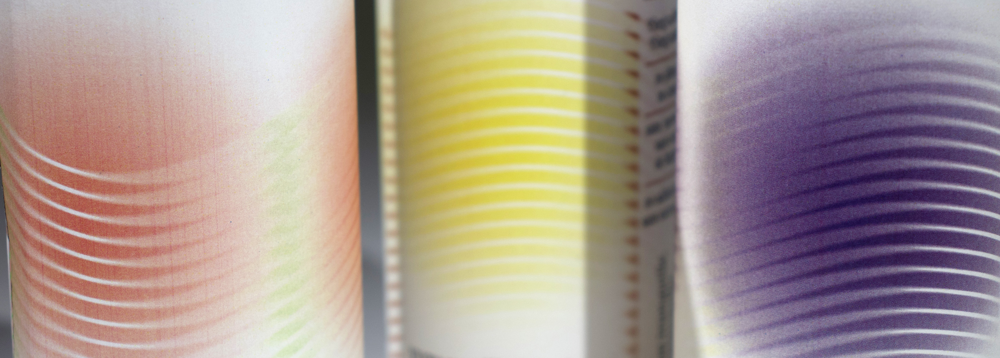
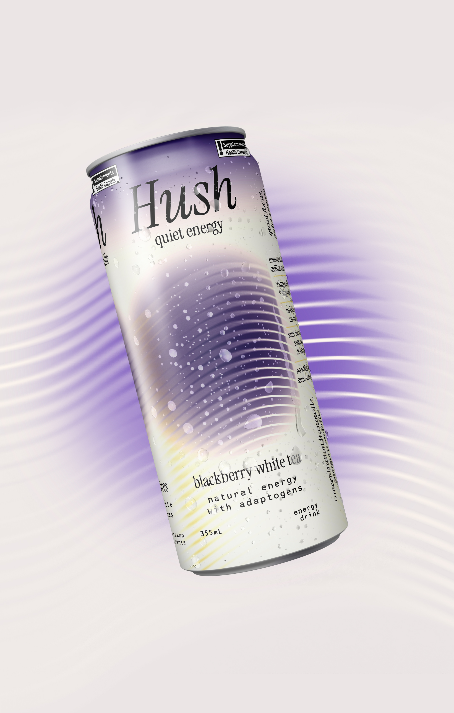
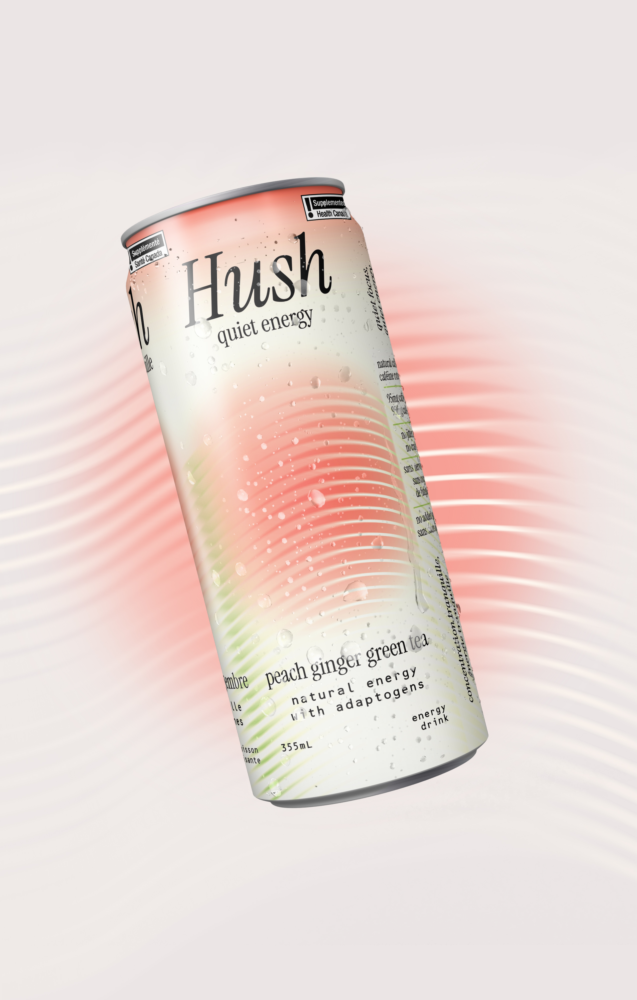
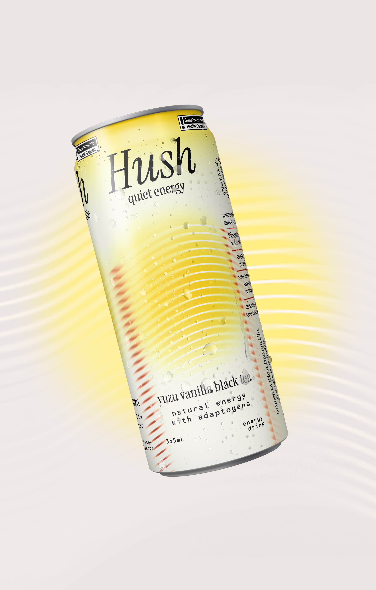
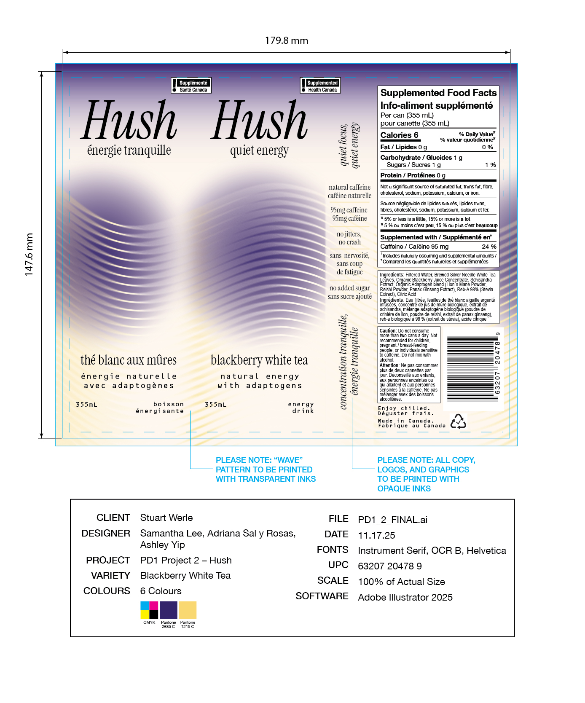
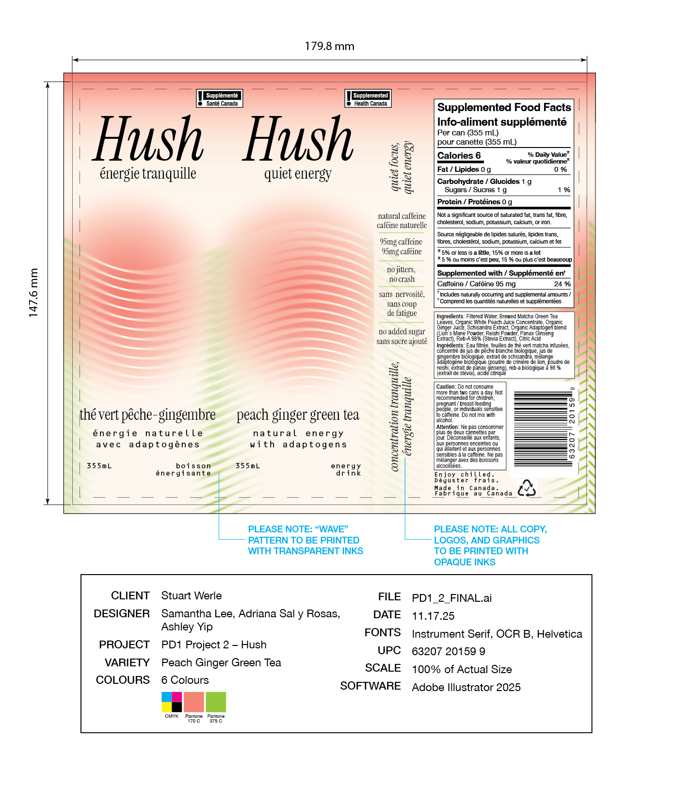
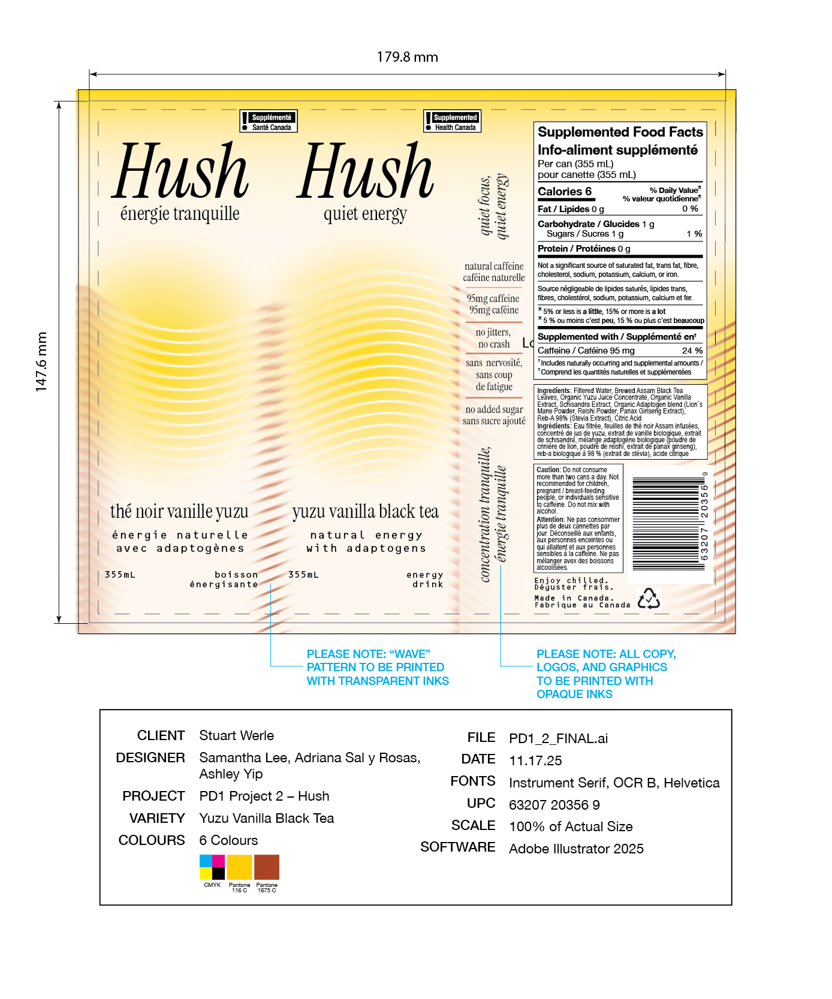

Hush is an original energy drink brand created for my Packaging Design class that promotes quiet focus through natural sources of caffeine.

The final packaging design reflects Hush’s brand positioning as a mindful, natural energy drink through soft gradients and blurred lines. The repeating wavy lines have hints of colour corresponding to the tea in the formula, representing the "flow state" and steady stream of energy that Hush’s natural caffeine provides. Everything is blurred, as if the surroundings have gone quiet, aligning with our slogan “Quiet Energy” and the light but fruity flavours.






We decided to create a natural energy drink brand because we detected a gap in the mainstream market for forms of healthy, sustainable energy.
While researching the product category, we identified that many popular brands portray intensity, pushing limits, and adrenaline, targeting audiences such as active lifestyles and late-night gamers.
With Hush, we wanted to subvert the intensity of the energy drink category through our calm visual identity, responsible messaging, and natural tea-based flavours.
The target group defined for Hush consists of working professionals (such as office workers, health workers with long hours, etc.) both male and female ages 25-45 who drink coffee, tea, or any form of caffeine or already consume energy drinks. The average consumer will be health conscious, is environmentally conscious, and wants a premium-feeling daily caffeine boost.
Hush gives the customer a steady caffeine boost that lasts for a long time that puts the mind in a "flow state" and does not cause any adverse effects such as jitters, anxiety, or caffeine crashes. It should be gentle enough for daily consumption and have delicious flavours that encourage the customer to keep buying the product.